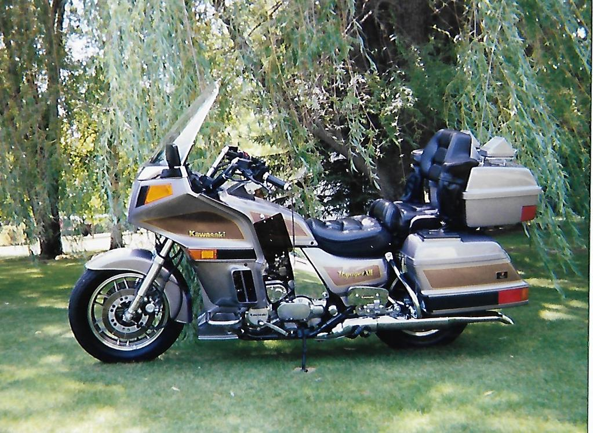

I bought this bike from a gentleman in Ottertail, Mn., he had bought it new when he lived in Minneapolis.
He later moved to one of the lakes in the Ottertail area, and had a horrible driveway so drove
it very little after moving. I believe it had about 3000 miles on it when I bought it